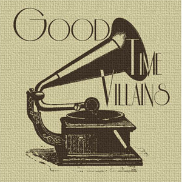

Good Time Villains

Dublin based acoustic Indie Folk band Good Time Villains, also known as GTV released their debut EP entitled GTV on April 17th. The EP is comprised of interesting tales including the story of OTZI who had been found in the snow – his body preserved for over 5000 years, or the thought-provoking track about the Irish Antarctic explorer Tom Crean which has been featured on Tomcreandiscovery.com
Originating in Perth Australia and progressing on back home in Dublin to form the full band GTV have been working on establishing a name for themselves within the music community in Dublin. A very authentic sound that can’t be too closely compared to any other artist, the band are influenced by a range of diverse artists including Damien Dempsey, Fleet Foxes, Declan O’Rourke, Luke Kelly and Ocean Colour Scene. The band love writing and playing music, this being where their main focus lies at all times.
The EP was released on Friday April 17th and the launch night was held in one of the bands favourite bars The Strawberry Hall located in Strawberry Beds Dublin, where they have listened to a lot of their idols play in the past. The band didn’t anticipate such a large crowd and had to stop allowing people into the gig area,the atmosphere was amazing, GTV seem to have a loyal following. Don’t worry if you missed The Straw Hall gig, as this wasn’t the only chance to catch the band this year, the band have big plans for touring in 2015 including The Salmon Leap Festival and The Irish Maritime Festival. Check out the band here goodtimevillains.bandcamp.com/album/gtv-2 or Facebook www.facebook.com/goodtimevillains